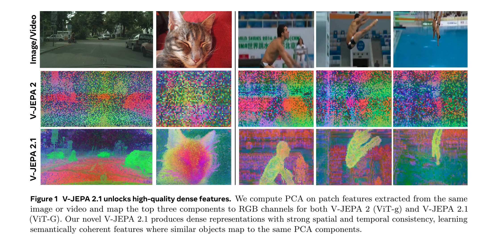
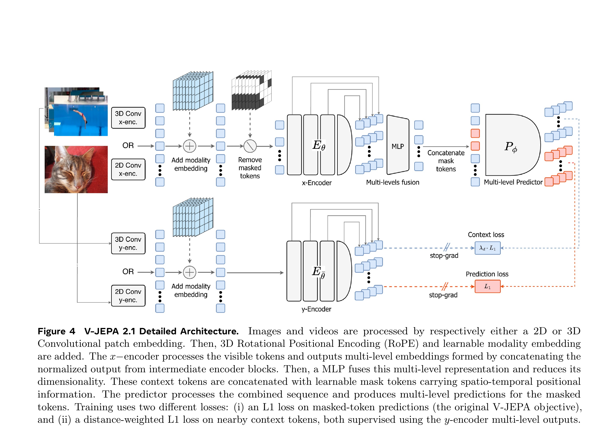

V-JEPA 2.1: Unlocking Dense Features in Video Self-Supervised Learning
Lorenzo Mur-Labadia et al. · FAIR at Meta / Universidad de Zaragoza · arXiv:2603.14482v2 · 2026
核心问题、两项 loss、架构图、机器人规划结果已成；各 dense benchmark 与蒸馏章节待扩展。
§1 V-JEPA 2 会“懂整段视频”，却不一定知道每个 patch 在哪里
V-JEPA 2 在动作识别和 anticipation 上很强，但原 loss 只监督被 mask 的 token。可见 context token 可以偷懒充当全局信息汇聚器，不必保留局部空间结构。对分类这不致命，对深度、跟踪、导航和机械臂沿相机深度轴抓取却很致命。V-JEPA 2.1 的主线就是：让每个 token 都重新对自己的时空位置负责。

§2 Dense Predictive Loss：mask token 与 context token 都要被监督
原始 loss 只在 mask 集合 $M$ 上计算。V-JEPA 2.1 增加 context loss，把未遮 token 也与 target encoder 的同位置特征对齐，并用距离权重控制局部监督。类比来说，旧模型只批改“填空题”，新模型连题干里的每个词也检查是否放在正确位置。
- $M$
- 被遮 patch 的索引集合。
- $i\in M$
- 旧 V-JEPA 只在这些位置付出 loss。
- 问题
- 可见 token 没有逐位置约束，可以退化成全局 register-like token。
- $C$
- 可见 context token 的索引集合。
- $\lambda_i$
- 按离 mask 的时空距离加权，附近 context 受到更强约束。
- 总目标
- $\mathcal L_{\text{predict}}+\mathcal L_{\text{context}}$，同时保留全局与局部结构。
§3 四项配方不是并列噱头，而是一条递进链
Dense loss 修复最后一层的局部结构；Deep Self-Supervision 把监督送进多个中间层；Multi-Modal Tokenizer 让图像与视频各自用原生 patchifier；最后再扩大图像数据、模型和高分辨率 cooldown。四项组合的目标是让 dense 与 global 不再二选一。

§4 Dense feature 为什么会让真实机器人更会抓
论文沿用 V-JEPA 2-AC 的 300M action-conditioned predictor 和 DROID 训练协议，只替换冻结视觉 encoder。V-JEPA 2.1 的深度与局部几何更好，Franka grasp 成功率从 60% 提升到 70%；把规划 horizon 拉到 8 后可到 80%，而旧 V-JEPA 2 在长 rollout 下反而退化。
| Dense vision | NYUv2 depth 0.307 RMSE；ADE20K 47.9 mIoU（线性 probe）。 |
| Anticipation | Ego4D STA 7.71 mAP；EPIC-KITCHENS action Recall@5 40.8。 |
| Robot MPC | Reach 100%；Grasp 60% → 70%，长 horizon 配置到 80%；Pick-and-place 80%。 |
| 含义 | 更好的 state representation 会直接改善 latent dynamics 和目标距离，不是“视觉 benchmark 与机器人无关”。 |
§5 路线定位
V-JEPA 2.1 不是把 world model 变得更会“讲故事”，而是把 latent state 做得更像可定位、可追踪、可用于几何控制的世界状态。
动作仍靠第二阶段 DROID predictor；CEM 仍慢；长程规划仍受 rollout 累积误差影响；2B encoder 训练成本高。它改善 state estimation，不等于解决完整 WAM。